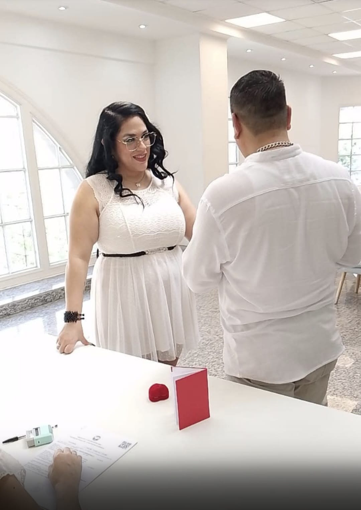
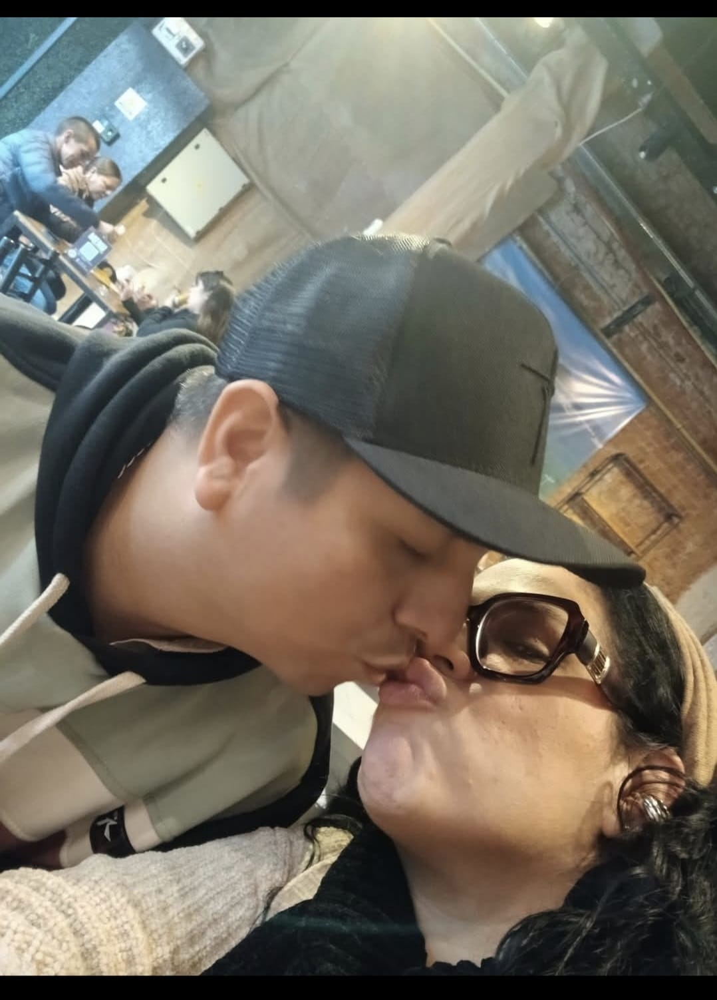
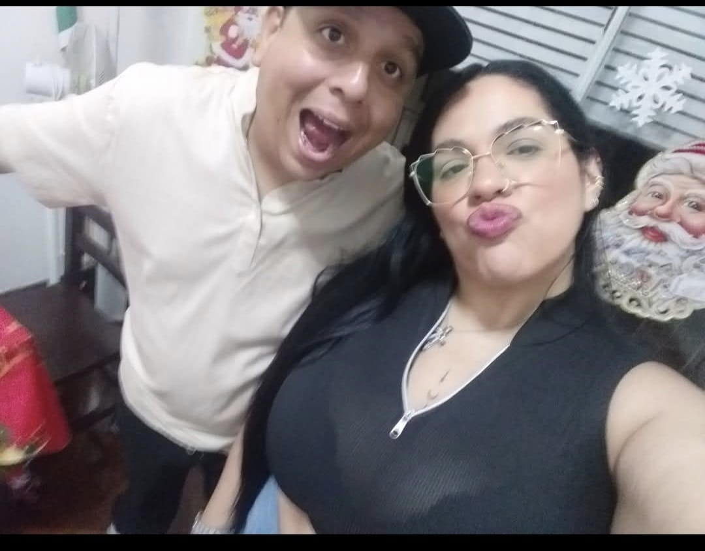

Nuestros momentos de este primer año de casados
- 


- 
- 

Hoy, 18 de octubre, celebramos un a√±o de casados‚Ķ pero en realidad, celebramos mucho m√°s que eso. Son 12 a√±os juntos, llenos de historias, risas, desaf√≠os y amor. Hemos pasado por tantas cosas, y cada una nos ha hecho m√°s fuertes.No hicimos votos ese d√≠a, pero si los hubi√©ramos dicho, habr√≠an sido simple: seguir eligi√©ndote cada d√≠a, apoyarte en los momentos dif√≠ciles y celebrar juntos cada logro. Gracias por ser mi compa√±ero en esta aventura llamada vida, por no soltar mi mano cuando m√°s lo necesitaba, por construir conmigo un hogar lleno de amor y paciencia. Un a√±o de casados, 12 de amor, y toda una vida por delante. üíç‚ù§Ô∏è